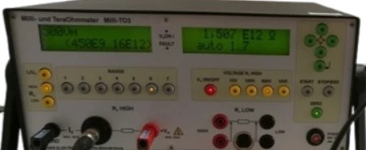

Milli-TO3 · Frontplatte
Leitbereich
Widerstandsmesstechnik
Hoch- und niederohmige Präzisionsmessgeräte für Oberflächen-, Volumen- und Ableitwiderstände sowie die Messung kleiner Ströme.
Zur Widerstandsmesstechnik- Messgrößen
- Oberflächen-, Volumen-, Ableitwiderstand; kleine Ströme
- Leitprodukt
- Milli-TO3 · Milli- und TeraOhmmeter
- Bereich
- 10 µΩ bis 1,6 PΩ
- Normen
- DIN, EN, IEC, ASTM